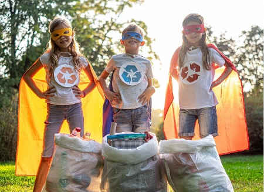

Paisaje natural del Parc de Can Mulà.

Proyecto municipal de mejora de zonas verdes urbanas.

Jornada de limpieza de espacios públicos con voluntarios.

Instalación de paneles solares en edificios municipales.

Puntos de reciclaje distribuidos por la ciudad.

Taller educativo de reciclaje para familias.